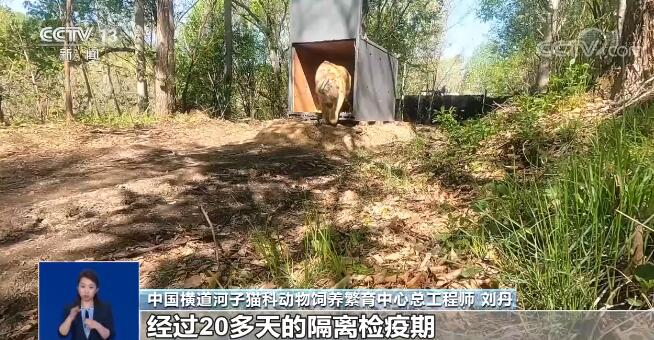
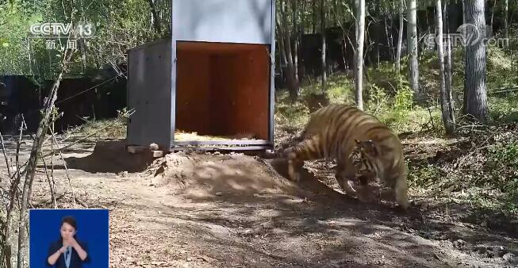
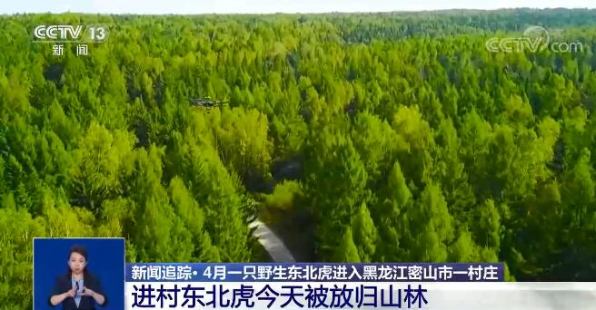
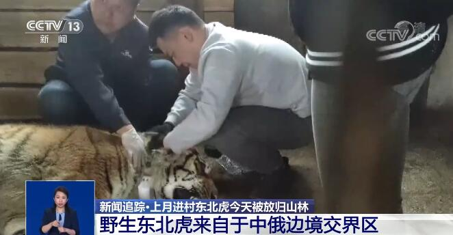
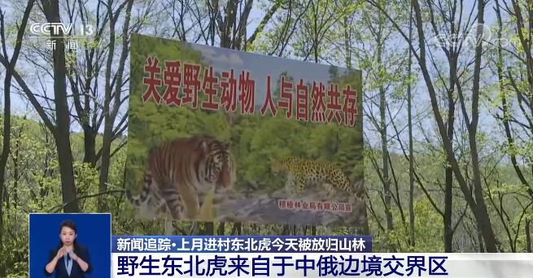

央视网消息：记者今天（5月18日）从国家林业和草原局获悉，4月23日在黑龙江密山被成功救护的野生东北虎今天放归自然了。
4月23日，一只野生东北虎进入黑龙江省密山市白鱼塘镇临湖村，黑龙江省林草局及当地政府成功救助后，将其送往中国横道河子猫科动物饲养繁育中心进行康复。经检测，该虎为雄性亚成体，体重450斤，2—3岁左右。

经过20多天的隔离检疫期，我们进行了一些疾病检查和检测，经过一系列的检疫，指标都在正常的范围内。通过它的饮食和健康情况的评估，我们专家认为这只虎已经适合于放归野外。

由于这只东北虎发现地附近仅有狭长森林地带，多农田、村庄，不适宜直接放归。综合专家实地调查评估结果，考虑森林范围、村庄分布、猎物密度等因素，同时为预防野生东北虎个体间冲突，确定在穆棱林业局有限公司施业区实施放归自然。穆棱林业局有限公司地处黑龙江省东南部，施业区内林草资源及生物多样性丰富，林地面积达24万公顷，总蓄积量3600多万立方米，森林覆盖率达89.8%。有东北虎、紫貂、原麝，东北红豆杉等国家一级保护野生动植物。

就关于老虎的放归，在我们国家还是第一次，我们主要通过给这个老虎带卫星跟踪项圈可以实时来对它进行空间定位。还有一个，在卫星跟踪项圈这样的一个基础之上，我们还用无人机的技术来实时跟踪它的一些行为状态。
这只野生东北虎来自哪里？它为什么会出现在村庄和农田？继续来看记者的报道。
根据花纹比对、基因检测结果，专家判断这只野生东北虎来自于中俄边境交界区。专家推测其离开母虎不久，但未能找到适宜的雌虎及领地，沿中俄边境线狭长林带盲目游荡至发现地。

这只野生东北虎经过20多天的这个隔离检疫期，我们将东北虎进行了完全的隔离，同时采取了不让见人，喂活的猎物，主要是以梅花鹿和野猪为主。在隔离期不要改变它的食性，维持其野性的不退化。
专家介绍说，野生东北虎放归自然后最核心的注意事项就是保证人虎安全。首先要对放归区域进行全面巡山清套，切实消除对野生虎个体安全的威胁因素；其次做好当地及周边居民安全防范教育宣传，普及安全和应急知识。

在放归之前，通过专家组的这样的一个科学评估，特别是在选址上，还有在放归的过程以及在放归后的一些监测管理上，我们都充分考虑了。我们在选定这个区域的时候，我们就考虑到它可能潜在的和人有多大的一个风险，而且这个虎的安全如何来保证。